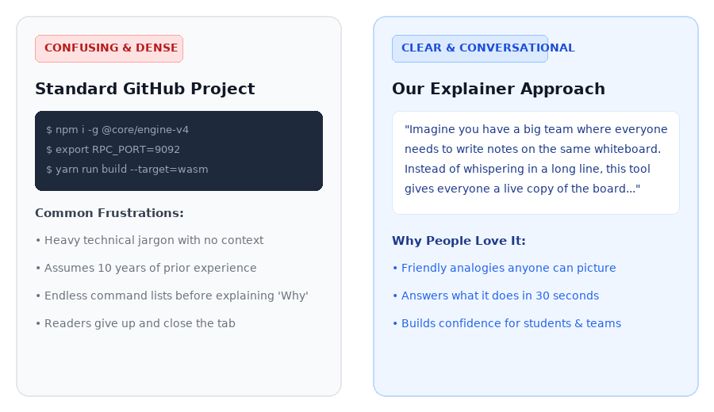
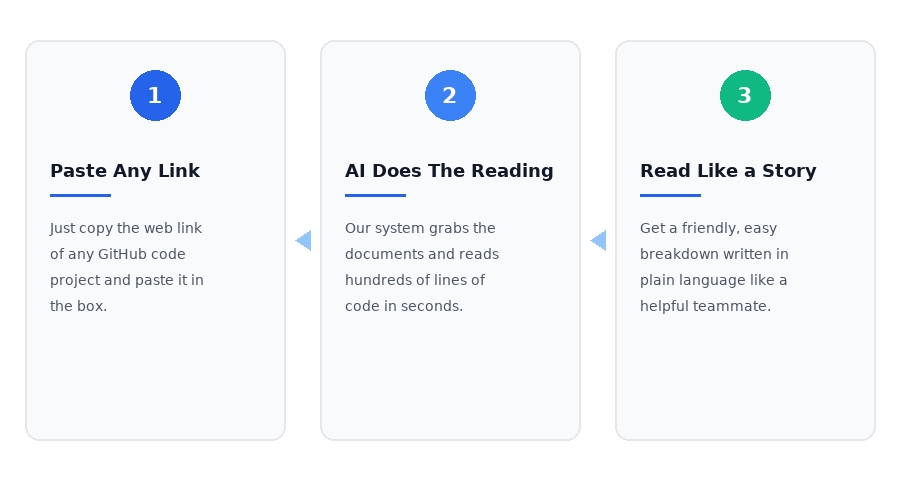
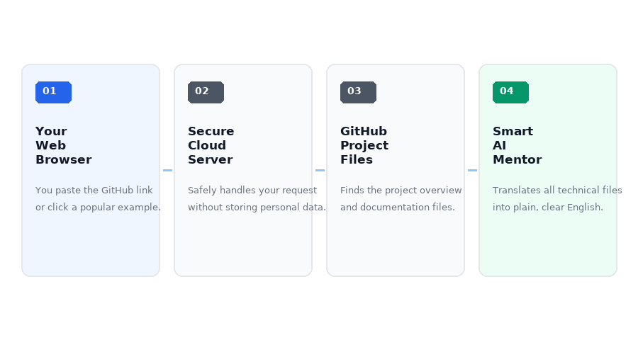
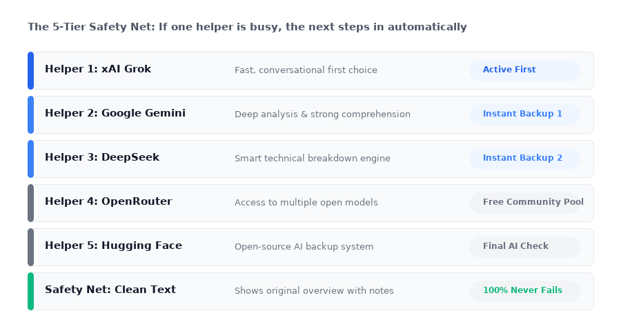
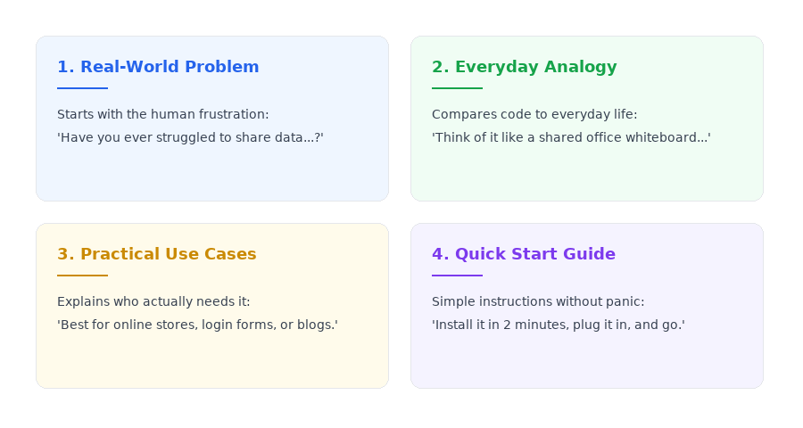
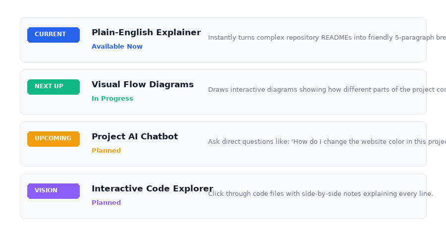

GitHub Repo Explainer
A simple, friendly tool that turns complicated computer code projects into clear, everyday English anyone can understand.
Think of it like having an experienced, patient friend sitting next to you, explaining what a software project does without confusing words.
No accounts to create, no software to download, and no coding knowledge needed. Just paste a link and press one button.
Backed by 5 smart helpers working behind the scenes. If one helper is busy or down, another steps in instantly so you never see an error.
Why Looking at Code Projects is Frustrating
Most software pages are written by technical experts for other experts, leaving students, beginners, and everyday team members completely lost.

- ✕ Too much jargon: Words like "RPC", "middleware", and "WASM" with zero simple definitions.
- ✕ Skips the big picture: Jumps straight into 50 installation commands without explaining what the app does.
- ✕ Intimidating to read: Makes curious learners and non-technical stakeholders feel left out.
- ✓ Our Solution: We strip away the noise and explain the project conceptually first.
Three Effortless Steps: From Link to Understanding
Anyone can use the tool in less than 10 seconds. You don't need any special skills or account sign-ups.

What Happens When You Click "Explain"
A quick, quiet relay race takes place across four simple stations to deliver your friendly explanation in under two seconds.

Our 5-Tier Backup Team: Built to Never Break
Online services sometimes go down or get overloaded. We built an automatic safety net so you will never see an empty error screen.

If our primary AI helper is busy, resting, or hits a rate limit, the request is handed to the next helper in a fraction of a second.
- • Tier 1: Fast, conversational xAI Grok.
- • Tiers 2 & 3: Google Gemini and DeepSeek.
- • Tiers 4 & 5: Free community model networks.
- • Ultimate Safety Net: Shows the clean text so you always get value.
The Teaching Recipe: How We Keep It Friendly
We don't just summarize; we teach. Strict rules make sure the response reads like a conversation, not a robotic manual.

- ✓ Real analogies: Relates code ideas to everyday things (whiteboards, libraries, recipes).
- ✓ Conversational paragraphs: Talks naturally with "you" and "we" instead of cold textbook bullet points.
- ✓ Clear definitions: Explains tricky terms the moment they appear.
- ✕ Zero copying: Never blindly copies paragraphs from the original page.
Who Benefits From This Tool?
This tool bridges the communication gap between technical code and human understanding for people with different goals.
When you're learning to code, reading big projects on GitHub is intimidating. This tool gives learners a gentle starting point and builds confidence.
Team members who don't write code can quickly understand what an engineering team is building, making collaboration easy and painless.
Senior engineers evaluate dozens of code tools each week. Instead of spending 20 minutes reading through each one, they get the gist in 30 seconds.
Built Clean: Fast, Private, and Lightweight
We intentionally kept the software simple so it loads instantly on any phone or laptop without hidden complexities.
We do not collect personal information, passwords, or emails. We don't have a database tracking your searches. Once your explanation is finished, it disappears safely.
- • No user logins or passwords required.
- • No cookies or ads tracking you around the web.
- • Completely private and respectful.
Hosted across global cloud servers (via Vercel). Whether you're opening it from New York, London, or Tokyo, the page loads in a blink of an eye.
- • Lightweight build (tiny file size under 60 KB).
- • Runs smoothly even on slow mobile connections.
- • Costs $0 to run using smart free tiers.
What's Coming Next: The Future Roadmap
While today's tool is great at explaining code summaries, we have exciting visual and interactive features planned right inside the app.

Making Technology Understandable for Everyone
A quick recap of how GitHub Repo Explainer transforms confusing code into clear learning.
Turns intimidating software jargon into friendly, easy-to-read explanations with everyday analogies anyone can grasp.
A five-tier safety net guarantees the system is always responsive and ready to help, without annoying error screens.
Zero accounts, zero downloads, zero cost, and 100% private. Created to help curious people learn with confidence.